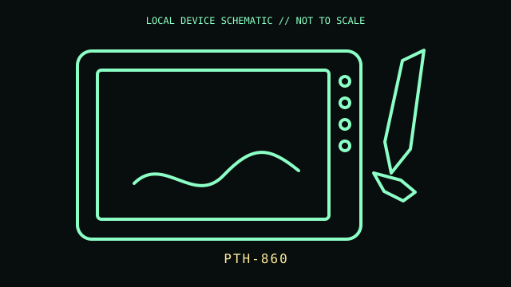

[ PEN TABLETS AND DIGITIZERS // IDENTIFIED COMPONENT ]
Wacom Intuos Pro Large
Large-format pressure-sensitive pen tablet with multitouch, ExpressKeys, and a radial Touch Ring.

MODEL IDENTIFICATION: Manufacturer identity: PTH-860. Compare the unit label, regional suffix, and revision against the manufacturer's manual before repair or compatibility claims.
Model specifications
| Catalog subcategory | Pen tablets and digitizers |
|---|---|
| Exact model / ID | PTH-860 |
| Model-specific features | Active area 311 × 216 mm; Wacom Pro Pen 2 with 8,192 pressure levels and ±60° tilt; eight ExpressKeys; USB-C wired or Bluetooth Classic wireless. |
| Interface and host support | Pressure, tilt, touch, and key mapping depend on Wacom driver and application support. A USB-C cable connection and Bluetooth pairing are distinct modes. |
| Revision / driver caveat | Confirm PTH-860 on the underside; it is the Large model, distinct from PTH-660 Medium and earlier PTH revisions. Driver support depends on the current OS and Wacom software release. |
Preservation and service notes
Use compatible Wacom nibs and store the battery-free pen safely. Clean the active surface with a soft dry cloth; do not use abrasive cleaners or force on the USB-C port.
Record the as-found label, accessories, host OS, driver/firmware version, and test method. Separate observed condition from published specifications; do not treat family-level feature claims as proof of a unit's revision.
Primary manufacturer documentation
- Wacom Intuos Pro specificationsManufacturer specification table for active area, pen, keys, and connectivity.
- Wacom Intuos Pro user manualManufacturer manual for the Intuos Pro generation; verify PTH-860 model applicability and region.
Manufacturer pages may change or retire. Preserve a copy of the applicable manual and note its revision when documenting a physical unit.